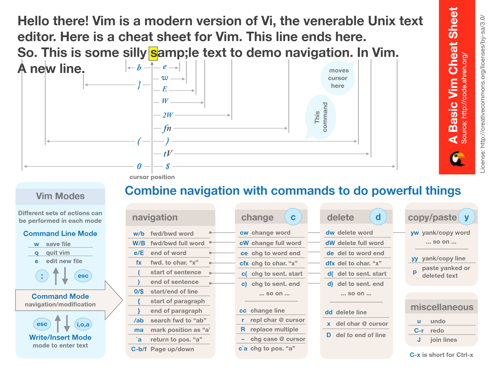

vim的食用技巧
vim的食用技巧
概述
vim是一种上古编辑神器，不过我更愿意称之为一种操作方式 
一：四种模式
- nommal
- insert
- visual
- 命令模式
normal to insert
- i在光标前插入
- I行首插入
- o下一行插入
- O上一行插入
- a光标后插入
- A行尾 插入
normal to visual
- 按v(visual)
- 退回普通就摁v或者jj没错
- 可视模式选中文字复制很好用
normal to command
- 按冒号:
- 退回普通模式用jj
- 比如用12就能跳转12行
二：在normal下的光标移动
下上是jk
左右是hl
w(word)跳到单词开头
b(back)
- 如果在本单词中 跳转本单词开头
- 跳到开头再跳开头
e(end)
- 如果在本单词中 跳转本单词末尾
- 跳到末尾再跳末尾
0 行首
^ 行首第一个非空字符
$ 行尾
gg 第一行
G 最后一行
f{char} 往下找跳到这行这个字符所在位置
F{char} 往上找跳到这行这个字符所在位置
; 重复上次的查找操作 往后找
, 重复上次往回找
三：visual模式下动作(motion)
i(inner)和a(around)的区别
加粗表示选中内容 | NULL | i | a | | ---- | ---------- | ------------ | | i" | "word" | "word" | | iw | word | 空格word | | i( | (word) | (word) |
常见motion
- iw/ aw
- i(/ a( or ib/ab
- i{/ a{ or iB/aB
- i"/ a"
- i'/ a'
- i`/
- i</ a<
- i[/ a[
html常用
- it/at tag是标签
- is/as sentence是句子
- ip/ap paragraph是段落
四:在normal下的操作符(operator)
- d(delete)
- c(change) 修改(删除并进入插入模式)
- 可以配合motion用
- y(yank) 复制
- u是撤销，不过我习惯用ctrl+c ### 常用的操作
- yyp
- Ndd N∈N+
- Ncc N∈N+
- Nyy N∈N+
- ciw/</`
- diw/(/其实换成b挺好用的
- da<
- ca(
- yi(
五:一些训练
TODO:1 修改HelloWord
1
2name:`HelloWorld`,
//似乎只有在前面ci`才有用 ciw只能到这个单词里才有用，要么先f过去TODO:2 修改泛型 ci<
TODO:3 删除泛型 di< da<
1
const count =ref<string>(0)
TODO:4 删除返回值 diB 或者 di{
1
2
3
4
5return{
flag,
handleSetTrue,
handleSetFalse,
}TODO:5 删除括号里的内容 dib 或者 di(
1
const count = ref(0)
TODO:6 删除数组里面的内容 di[ ci[
1
const arr=[1,2,3,4,5]
TODO:7 删除或修改模板字符串的内容 di` ci`
1
const templateString =`foo${arr}`
TODO:8 删除2行 2dd 复制2行 2yy 修改2行 2cc
1
2const a=1
const b=2TODO:9 删除到某个 修改到某个 复制到某个
1
2
3
4
5
6
7//vim is awesome
s awess awess awess awess awess awess awes
//如果复制s到e再p下去是上面这样的
//❀------------------------------------------------------分割线
//当然是使用 df{char} cf某个 yf某个
//当然啦F是向前找,别忘了
//另外找字符注意标点的全角半角不然可能找不到TODO:10 删除到 修改到 复制到 本行众的开头^ / 结尾$
1
2//这个只需要d^ 或者c$
tech otakus save the worldTODO:11 删除、修改、复制整个文件
1
cie die yie
TODO:12 删除、修改、复制标签
1
2
3
4
5
6
7<head>
<meta charset="UTF-8">
<meta http-equiv="X-UA-Compatible" content="IE=edge">
<meta name="viewport" content="width=device-width, initial-scale=1.0">
<title>天下第一喵</title>
<head>
<!--cit dit yit-->TODO:13 快速选中 这个实际上就是利用可视模式 viw vaw vi` vf{char} 这些都行
六:大小写切换
- ~ 当前光标切换
- n~ 光标开始的n个字母切换
- g~~ 改变当前行的大小写
- gUU 当前行大写
- guu 当前行小写
- gUaw(gUiw) 光标下单词大写，当然不止w，还有b ` B 这种
- guaw(guiw) 光标下单词小写
- 在选中模式下利用U u转换 ### 练习
1 | createapp(app) |
七:查找函数
- 在normal模式下用正则匹配
1
2
3查找def函数就用/def
. ：通配1个字符 ，如 匹配 server, 可以用 /se...r
* ：通配多个字符，如 匹配 privilege，可以用 p*ge - 利用 [ctags]插件 光标移到想要跳转的函数或变量上 ： " CTRL + ] " 回到跳转之前的位置：“ CTRL + t ” 按了多少次“ CTRL + ] ”，就可以按多少次“ CTRL + T ”原路返回 [[ 向前跳到上一个函数头]] 向后跳到下一个函数头 tag+函数名 来跳转到对应的函数 :tag 函数名 安装ctags： yum install ctags sudo apt-get install exuberant-ctags 在源文件目录树执行如下命令： ctags -R .